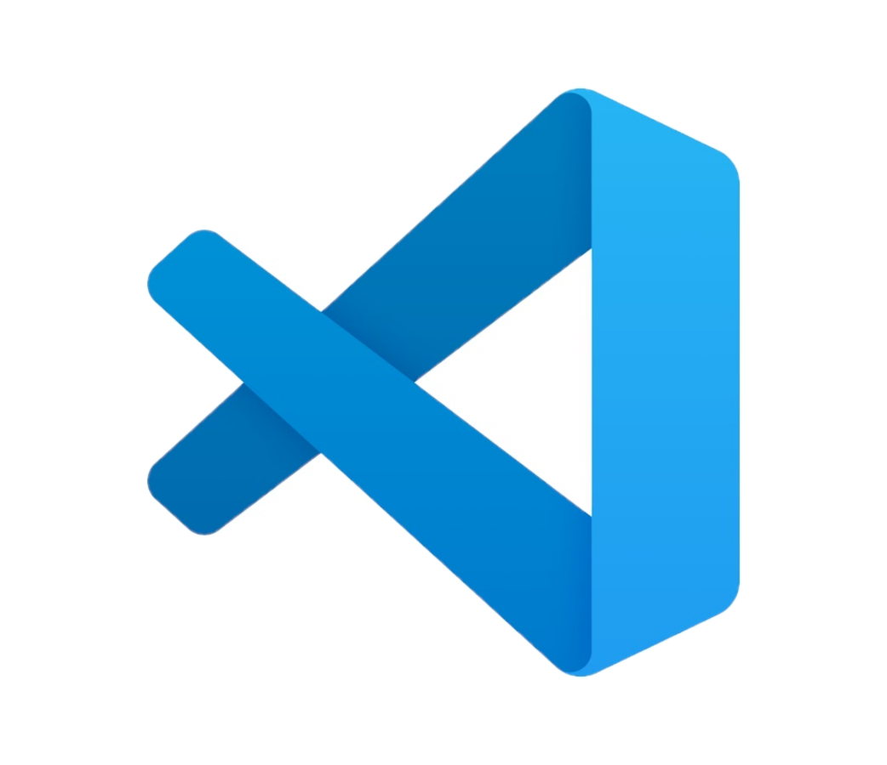

Visual Studio Code is een geavanceerde code-editor die is ontworpen voor het ontwikkelen en debuggen van moderne web- en cloudtoepassingen. Het is gratis beschikbaar voor verschillende besturingssystemen, waaronder Linux, macOS en Windows. Met ondersteuning voor bijna elke grote programmeertaal, biedt Visual Studio Code functies zoals IntelliSense voor code-aanvulling, ingebouwde Git-ondersteuning en een breed scala aan extensies via de VS Code Marketplace. Gebruikers kunnen de editor ook aanpassen met thema's, instellingen en profielen om een unieke ontwikkelomgeving te creëren die past bij hun behoeften. Bovendien is Visual Studio Code gebouwd op open-source technologieën, waardoor het een flexibele en krachtige tool is voor ontwikkelaars over de hele wereld.
